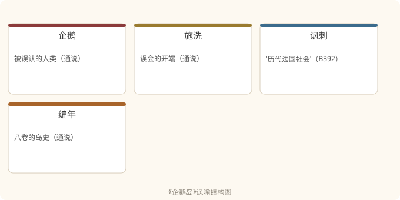

企鹅岛
一、基本信息
| 作者 | 阿纳托尔·法朗士 |
|---|---|
| 成书/出版 | 1908年（Britannica B392：L'Île des Pingouins (1908)——'An extended satire of French society through the ages'） Anatole France — Encyclopaedia Britannica（百科全书） |
| 国别/地区 | 法国 |
| 时代 | 近代 · 20世纪初 |
| 体裁 | 长篇小说 |
| 语言 | 法语 |

《企鹅岛》讽喻结构图（主题·结构图）
二、创作背景
Britannica（B392）：'An extended satire of French society through the ages'（历代法国社会的长篇讽刺）。
Britannica（B392）：法朗士——1921诺奖；德雷福斯事件后转向社会关怀。
题材（通说待核）：近视修士把企鹅误认为人——'受洗'而衍生的伪岛史。
三、内容脉络
（通说待核）圣马埃尔修士为企鹅'施洗'——伦理的喜剧开端。
（通说待核）八卷企鹅岛编年：从建国到'未来'的末世（通说待核）。
四、主要人物表
| 人物 | 身份 | 说明 |
|---|---|---|
| 圣马埃尔 | 近视修士 | （通说待核） |
| 企鹅岛民 | 讽喻人类 | （通说待核） |
五、主题与艺术特点
- '历代法国社会的长篇讽刺'（B392）。
- 施洗误会的原型喜剧（通说待核）。
- '历史'的循环讽喻（通说待核）。
六、影响与评论
- Britannica：'An extended satire of French society through the ages'（B392）。
Anatole France — Encyclopaedia Britannica（百科全书） - Britannica：1921诺奖（B392 交叉）。
Anatole France — Encyclopaedia Britannica（百科全书）
七、阅读建议
难点
- 讽喻的历史层次。
- '企鹅'与'人'的镜像。
- 《企鹅岛》中译本（人民文学等——通说待核）。
- 法文原版（公有领域）。
法朗士讽刺首选；与《诸神渴了》对读。
八、待核实
- 圣马埃尔修士细节核对（通说）。
- 1908年出版细节待核。
- 八卷结构核对（通说）。